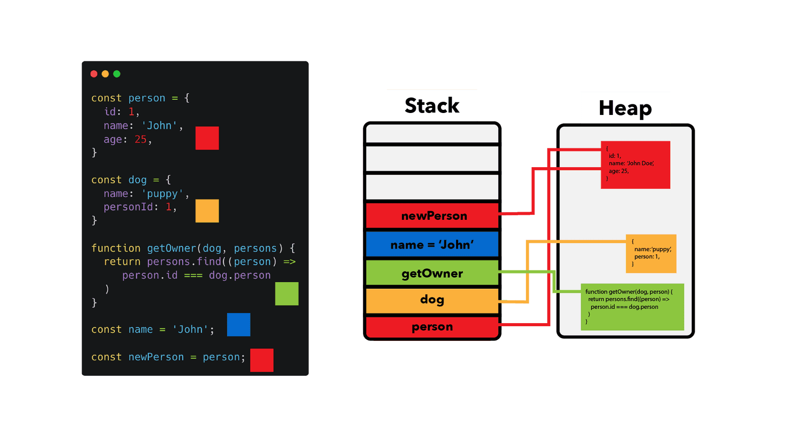

In JavaScript, memory allocation is managed automatically through a process called garbage collection. When you create variables, objects, or functions, memory is allocated to store these values. JavaScript uses a combination of stack and heap memory to manage data.
Stack memory is used for storing primitive data types (like numbers, strings, booleans) and function calls. It operates in a last-in-first-out (LIFO) manner, meaning the last item added to the stack is the first one to be removed. Stack memory is fast and efficient but has a limited size.
Heap memory is used for storing non-primitive data types (like objects and arrays). It allows for dynamic memory allocation, meaning that memory can be allocated and deallocated as needed. Heap memory is larger than stack memory but is slower to access.
JavaScript automatically manages memory through garbage collection. When an object or variable is no longer referenced or accessible in the code, the garbage collector identifies it as "garbage" and frees up the memory it occupied. This helps prevent memory leaks and ensures efficient use of memory resources.
By understanding how memory allocation works in JavaScript and following best practices, you can write efficient and effective code that makes optimal use of memory resources.

Example:
let name = "Alice"; // Memory allocated in stack
let anotherName = name; // Both variables point to the same string in stack memory
console.log(name); // "Alice"
console.log(anotherName); // "Alice"
name = "Bob"; // 'name' now points to a new string in stack memory
console.log(name); // "Bob"
console.log(anotherName); // "Alice" (remains unchanged)
let obj1 = { key: "value" }; // Memory allocated in heap
let obj2 = obj1; // Both variables reference the same object in heap memory
console.log(obj1); // { key: "value" }
console.log(obj2); // { key: "value" }
obj1.key = "newValue"; // Modifying the object through obj1
console.log(obj1); // { key: "newValue" }
console.log(obj2); // { key: "newValue" } (reflects the change)